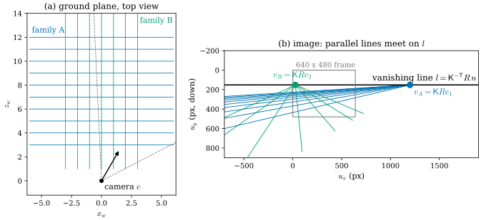
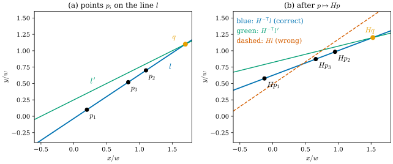
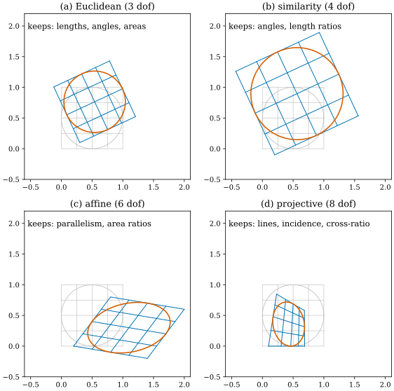

27.2 Projective Geometry for Multi-View Vision
Goals
- camera matrix \(P = \mathsf K[R \mid T]\)를 \(\RP^3\)에서 \(\RP^2\)로 가는 map으로 보고, 그것이 카메라 중심에서만 정의되지 않으며 앞과 뒤를 구별하지 못한다는 것을 설명할 수 있다.
- vanishing point \(\mathsf KRd\)와 vanishing line \(\mathsf K^{-\mathsf T}Rn\)을 plane at infinity의 image로 유도할 수 있다.
- homography가 8차원 Lie group \(\mathrm{PGL}(3)\)의 원소라는 것과 4점 대응이 필요한 이유를 dimension으로 설명하고, 점은 \(H\)로, 직선은 \(H^{-\mathsf T}\)로 변하는 이유를 vector와 covector의 차이로 말할 수 있다.
- Euclidean ⊂ similarity ⊂ affine ⊂ projective의 계층이 각각 무엇을 보존하는지 말하고, NeRF의 NDC가 직선을 직선으로 보내는 projective transformation이라는 것을 보일 수 있다.
Prerequisites
- Section 27.1: 투영 \(\varphi\), fiber = ray, pinhole은 \(\RP^2\)의 chart라는 것(Every Central Camera Is a Chart of the Sphere)
- Example 0.6.4와 그 뒤의 In computer vision 상자: \(\RP^2\), homogeneous coordinates, point at infinity, vanishing point, homography의 자유도 8
- Section 0.7: covector와 pullback (0.7.2), contravariant와 covariant
- Section 0.6: Lie group, \(\GL(n, \R)\)
Motivation
Section 27.1은 pinhole이 \(S^2\)가 아니라 \(\RP^2\)의 chart라는 사실로 끝났다. 투영 \((t_x/t_z,\ t_y/t_z)\)는 \(t\)와 \(\lambda t\)(\(\lambda \ne 0\))에서 같은 값을 주므로, pinhole이 기록하는 것은 카메라 중심을 지나는 직선이다. 이 관점을 끝까지 밀고 가면 multi-view geometry의 많은 부분이 \(\R^4\)와 \(\R^3\) 사이의 linear algebra가 된다. SfM 교과서 [HZ]의 첫 부분이 바로 이것이다.
이 절은 그 linear algebra를 differential geometry의 말로 정리한다. 답할 질문은 다음과 같다.
- \(3 \times 4\) 행렬 \(P\)는 어떤 map인가? 왜 하나의 행렬로 모든 점을 투영할 수 있고, 어디서 그것이 실패하는가?
- 평행한 직선들은 왜 영상에서 한 점에서 만나고, 땅의 평행선들이 만나는 점들은 왜 한 직선(지평선) 위에 있는가?
- homography를 추정하려면 왜 정확히 4점이 필요한가? 영상의 직선은 왜 \(H\)가 아니라 \(H^{-\mathsf T}\)로 변하는가?
- NeRF의 NDC는 어떤 map이고, 왜 forward-facing 장면에서만 쓰는가?
The Camera Matrix as a Map \(\RP^3 \dashrightarrow \RP^2\)
world 점 \(x \in \R^3\)를 homogeneous coordinates \(X = (x, 1) \in \R^4\)로 쓰면 \(\R^3\)은 real projective space(실사영공간) \(\RP^3\)의 chart \(\{w \ne 0\}\)이다(\(\RP^n\)의 정의는 Tour Example 0.6.4의 \(\RP^2\)와 같다). camera matrix는
이다. 둘째 식의 마지막 성분으로 나누면 \(t_z \gt 0\)인 점에서 (27.1.1)의 \(\varphi(t)\)다(distortion이 없는 경우). \(P\)는 rank 3이고(\(\mathsf K\)와 \(R\)이 invertible), kernel은 카메라 중심 \(c\)의 homogeneous coordinates가 span한다.
Proposition 27.2.1 (the camera as a map of projective spaces). \([X] \mapsto [PX]\)는 \(\RP^3 \setminus \{[c : 1]\}\)에서 \(\RP^2\)로 가는 잘 정의된 smooth map이고 submersion이다. 그 fiber는 카메라 중심을 지나는 projective line에서 중심을 뺀 것이다. 특히 \(x\)와 중심에 대해 point reflection한 점 \(2c - x\)는 같은 image를 가진다. homogeneous 좌표로는 \(P(2c - x, 1) = -P(x, 1)\)이다.
Derivation. \(\lambda \ne 0\)이면 \(P(\lambda X) = \lambda PX\)이므로 \([PX]\)는 대표의 선택에 무관하고, \(PX = 0\)인 것은 \(X \in \ker P\), 곧 \([X] = [c : 1]\)일 때뿐이다. smooth이고 submersion이라는 것은 다음 관찰에서 나온다. \(P\colon \R^4 \setminus \ker P \to \R^3 \setminus \{0\}\)는 surjective linear map의 제한이므로 submersion이고, 두 quotient map \(\R^4 \setminus \{0\} \to \RP^3\), \(\R^3 \setminus \{0\} \to \RP^2\)도 submersion이다(Example 12.1.9에서 coordinate representation이 dehomogenization \(x \mapsto (x^j/x^i)_{j \ne i}\)이었고, 이것은 \(x^i = 1\)인 평면 위에서 항등이므로 rank가 full이다). 위 \(P\)와 두 quotient map이 가환하므로 그 사이에 유도된 map도 smooth이고 submersion이다. chart \(\{w \ne 0\}\)와 \(\{t_z \ne 0\}\)에서 보면 \(x \mapsto \mathsf K t\)의 dehomogenization이고, (27.1.3)처럼 rank가 2다. \([PX] = [PX']\)이면 \(P(X - \mu X') = 0\)인 \(\mu\)가 있어 \(X - \mu X' \in \R(c, 1)\)이므로, \([X], [X'], [c : 1]\)은 한 projective line 위에 있다. 마지막 주장은 \(R(2c - x) + T = -(Rx + T) = -t\)에서 나온다. 곧 \(P(2c - x, 1) = \mathsf K(-t) = -P(x, 1)\)이고, 두 homogeneous 벡터는 부호만 달라 \(\RP^2\)의 같은 점이다(dehomogenize한 pixel 좌표도 같다). 다른 것은 셋째 성분 \(t_z\)의 부호, 곧 그 점이 카메라 앞에 있는지 뒤에 있는지다.
기호 \(\dashrightarrow\)는 “어떤 점에서 정의되지 않는 map”이라는 뜻이다. 정의되지 않는 점은 중심 하나뿐이고, 이것은 실제 카메라에서도 마찬가지다. 카메라 중심에 있는 점은 어느 pixel에도 대응하지 않는다. 대신 projective map은 Proposition 27.1.1의 \(\varphi\)보다 넓은 곳에서 정의된다. 카메라 뒤의 점(\(t_z \lt 0\))도, 카메라 평면 위의 점(\(t_z = 0\), image는 point at infinity)도, 무한히 먼 점 \([d : 0]\)도 image를 가진다. 그 대가로 앞과 뒤를 구별하지 못한다. \(t\)와 \(-t\)가 같은 image를 가지기 때문이다. \(PX\)의 대표에는 \(t_z\)의 부호가 남아 있지만 \([PX]\)로 가면서 사라진다. 이 정보, 곧 cheirality는 projective geometry 밖에서 따로 다뤄야 한다(Section 27.3).
Points at Infinity, Vanishing Points, and Vanishing Lines
\(\RP^3\)에서 \(w = 0\)인 점 \([d : 0]\) 전체를 plane at infinity(무한원평면)라 한다. \(d\)와 \(\lambda d\)가 같은 점이므로, 이것은 \(\R^3\)의 방향(부호 없이)들의 공간 \(\RP^2\)다. 방향이 \(d\)인 직선 \(x_0 + sd\)의 homogeneous coordinates \((x_0 + sd, 1) \sim (x_0/s + d, 1/s)\)는 \(s \to \infty\)에서 \([d : 0]\)으로 간다. 평행한 직선들은 모두 같은 point at infinity를 지난다. 그 image가
이다. 첫째 식이 방향 \(d\)의 vanishing point(소실점), 둘째 식이 normal이 \(n\)인 평면들의 vanishing line이다. 첫째 식은 Tour의 In computer vision 상자에서 본 \(\mathsf KR\mathbf d\)이고, \(P(d, 0)\)에서 넷째 열 \(\mathsf KT\)가 \(w = 0\)에 곱해져 사라지기 때문에 위치 \(T\)와 무관하다. 둘째 식은 다음과 같이 확인한다. normal이 \(n\)인 평면에 놓인 방향은 \(\inner{n}{d} = 0\)을 만족하고, 그런 \(d\)의 vanishing point는 모두 \(l_n^{\mathsf T}v(d) = n^{\mathsf T}R^{\mathsf T}\mathsf K^{-1}\mathsf KRd = \inner{n}{d} = 0\)을 만족한다. 곧 한 평면 위의 모든 방향의 vanishing point는 한 직선 \(l_n\) 위에 있다. 땅(normal = 위쪽)의 vanishing line이 지평선이다.
\(P\)를 plane at infinity에 제한하면 \([d : 0] \mapsto [\mathsf KRd]\), 곧 invertible \(3 \times 3\) 행렬 \(\mathsf KR\)이 정하는 \(\RP^2\)에서 \(\RP^2\)로의 diffeomorphism이다. 그러므로 영상의 모든 점은 정확히 하나의 방향(부호 없이)의 vanishing point다. 카메라 중심을 지나는 ray의 방향이 그것이다. vanishing point가 calibration에 쓰이는 것도 이 식 때문이다. 서로 수직인 두 방향 \(d_i \perp d_j\)의 vanishing point는 \(v_i^{\mathsf T}(\mathsf K\mathsf K^{\mathsf T})^{-1}v_j = d_i^{\mathsf T}R^{\mathsf T}R\,d_j = 0\)을 만족하므로, 장면의 서로 orthogonal한 세 방향을 보면 \(\mathsf K\)에 대한 방정식을 얻는다 [HZ].

Figure 27.2.1의 (a)에서 시작하자. 땅 위의 파란 선들은 서로 평행하고 초록 선들도 서로 평행하다. (b)에서 파란 선을 왼쪽 아래(카메라 가까이)에서 오른쪽 위로 따라가면 모두 frame 오른쪽 밖의 파란 점 \(v_A\)로 모인다. 초록 선들은 frame 왼쪽 가장자리의 초록 점 \(v_B\)로 모인다. (a)에서 \(+x_w\)가 보는 방향의 오른쪽, \(+z_w\)가 왼쪽에 있는 것과 같은 배치다. 두 점을 이으면 검은 직선이 되는데, 땅 위의 다른 어떤 방향(예를 들어 대각선 방향)의 평행선도 이 직선 위의 한 점에서 만난다. 이 직선 아래가 땅이고 위가 하늘이다. 카메라의 pitch를 바꾸면 이 직선이 위아래로, roll을 바꾸면 기울어진다. 이것은 \(R\)만으로 정해지고 카메라의 위치 \(T\)와는 무관하다.
Homographies and the Lie Group \(\mathrm{PGL}(3)\)
invertible \(3 \times 3\) 행렬 \(H\)는 \([p] \mapsto [Hp]\)로 \(\RP^2\)의 diffeomorphism을 정하고, \(H\)와 \(\lambda H\)는 같은 map이다(Tour Example 0.6.4 뒤의 상자). 이런 map 전체가 projective general linear group \(\mathrm{PGL}(3) = \GL(3, \R)/\R^{\times}\)이고, 그 원소가 homography다. \(\GL(3, \R)\)은 9차원 Lie group이고 scalar 행렬 \(\R^{\times}I_3\)는 1차원 subgroup이므로 \(\mathrm{PGL}(3)\)은 8차원이다. 실제로 \(\mathrm{PGL}(3)\)은 \(\mathrm{SL}(3) = \{\det = 1\}\)과 같은 group이다. \(3\)이 홀수라서 \(\det(\lambda H) = \lambda^3\det H = 1\)인 실수 \(\lambda\)가 하나뿐이므로, 각 class에서 \(H/\sqrt[3]{\det H}\)라는 대표가 하나씩 정해지고, 이 대표를 고르는 map은 곱을 보존한다(\(\det\)이 곱을 보존하므로). 짝수 차원에서는 \(-I\)의 determinant가 \(1\)이라 이렇게 되지 않는다(\(\mathrm{PGL}(2, \R) \not\cong \mathrm{SL}(2, \R)\)). \(\mathrm{SL}(3)\)은 \(\det\)의 regular level set이므로 8차원 Lie group이다.
\(\mathrm{PGL}(3)\)은 \(\RP^2\)에 smooth하게 group action(군작용)한다. 곧 \((H, [p]) \mapsto [Hp]\)가 smooth이고 \(H_1(H_2[p]) = (H_1H_2)[p]\)이다. 3D vision에서 homography가 나오는 대표적인 두 경우는 다음과 같다. camera 1의 좌표로 \(\inner{n}{t_1} = \delta\)인 평면(\(n\)은 unit normal, \(\delta \gt 0\)는 camera 1에서 평면까지의 거리) 위의 점은 \(\inner{n}{t_1}/\delta = 1\)이므로 \(t_2 = Rt_1 + T = (R + Tn^{\mathsf T}/\delta)\,t_1\)이고, 카메라가 회전만 하면(\(T = 0\)) 모든 점이 \(t_2 = Rt_1\)이므로
이다. 앞의 것이 평면(바닥, 벽, 문서)을 찍은 두 영상, 뒤의 것이 panorama stitching의 경우다. 두 영상 사이에서 plane at infinity가 유도하는 homography도 \(H_{\text{rot}}\)이다(\(\delta \to \infty\)). 아주 먼 배경이 카메라가 회전만 한 것처럼 움직이는 이유다. Chapter 30의 2DGS가 splat 평면에서 영상으로 가는 정확한 map으로 쓰는 것도 homography다(Section 30.3).
Proposition 27.2.2 (four points determine a homography). \(\RP^2\)의 네 점 \([p_1], \dots, [p_4]\) 가운데 어느 세 점도 한 직선 위에 있지 않고 \([q_1], \dots, [q_4]\)도 그렇다면, \([Hp_i] = [q_i]\)인 \(H \in \mathrm{PGL}(3)\)이 정확히 하나 있다.
Derivation. 어느 세 점도 collinear하지 않으므로 \(p_1, p_2, p_3\)은 \(\R^3\)의 basis이고 \(p_4 = \sum_i a_ip_i\)에서 모든 \(a_i \ne 0\)이다. \(A = (a_1p_1\ a_2p_2\ a_3p_3)\)는 \(e_1, e_2, e_3, (1,1,1)\)을 \(p_1, \dots, p_4\)로(scale까지) 보낸다. \(q_i\)에 대해서도 같은 \(B\)를 만들면 \(H = BA^{-1}\)이 원하는 map이다. 유일성: \(e_1, e_2, e_3\)을 고정하는 \(H\)는 대각행렬이고, \((1,1,1)\)도 고정하면 scalar 행렬이다. dimension으로 세면, 대응 하나 \([Hp] = [q]\)는 \(q \times Hp = 0\)이라는 \(H\)의 성분 9개에 대한 linear equation 두 개를 주고, 4점이면 8개의 방정식이 9차원 공간에 1차원의 해(곧 \(\mathrm{PGL}(3)\)의 한 점)를 남긴다. 이것이 DLT다 [HZ].
세 점이 한 직선 위에 있으면 이 방정식들이 독립이 아니어서 해가 하나로 정해지지 않는다(verify 스크립트에서 null space의 dimension이 1보다 큼을 확인했다). RANSAC으로 homography를 추정할 때 퇴화한 sample을 버리는 이유다.
Points and Lines Transform Differently
\(\RP^2\)의 직선은 \(\R^3\)에서 원점을 지나는 평면이고, 평면은 linear functional의 kernel이다. 그래서 직선은 \(l \in \R^3 \setminus \{0\}\)(scale은 무시)로 쓰고 점 \([p]\)가 그 위에 있다는 조건은 \(l^{\mathsf T}p = 0\)이다. 두 점을 잇는 직선과 두 직선의 교점은 모두 cross product다.
셋째 줄의 \(C\)는 conic(원뿔곡선) \(\{p : p^{\mathsf T}Cp = 0\}\)의 symmetric matrix이고, \(C^* = C^{-1}\)(scale은 무시)은 그 dual conic(쌍대 원뿔곡선), 곧 conic에 접하는 직선들의 집합 \(\{l : l^{\mathsf T}C^*l = 0\}\)의 행렬이다. Chapter 30의 ray–splat intersection이 두 직선의 교점을 cross product로 구한 것((30.3.3))이 첫 줄의 둘째 식이다.
Proposition 27.2.3 (points are contravariant, lines are covariant). homography가 점을 \(p \mapsto Hp\)로 보내면, incidence \(l^{\mathsf T}p = 0\)을 보존하는 직선의 변환은 \(l \mapsto H^{-\mathsf T}l\)뿐이다(scale까지). conic과 dual conic은 (27.2.4)의 셋째 줄로 변한다.
Derivation. \((H^{-\mathsf T}l)^{\mathsf T}(Hp) = l^{\mathsf T}H^{-1}Hp = l^{\mathsf T}p\)이므로 incidence가 보존된다. 역으로 \(l\) 위의 모든 \(Hp\)를 지나는 직선은 하나뿐이다. conic은 \((Hp)^{\mathsf T}(H^{-\mathsf T}CH^{-1})(Hp) = p^{\mathsf T}Cp\)이고, dual conic은 접선이 직선처럼 변하므로 \((H^{-\mathsf T}l)^{\mathsf T}(HC^*H^{\mathsf T})(H^{-\mathsf T}l) = l^{\mathsf T}C^*l\)이다.
이것은 Tour Section 0.7의 vector와 covector의 관계 그대로다. 점 \(p\)는 \(\R^3\)의 vector이므로 \(H\)로 앞으로 밀려 간다(contravariant). 직선 \(l\)은 \(\R^3\)의 linear functional \(p \mapsto l^{\mathsf T}p\), 곧 covector이므로 \(H^{-1}\)로 당겨진다. \(l' = l \circ H^{-1}\)이고 행렬로는 \(l'^{\mathsf T} = l^{\mathsf T}H^{-1}\)이다((0.7.2)). 두 변환이 반대이기 때문에 짝 \(l^{\mathsf T}p\), 곧 incidence가 보존된다.

Figure 27.2.2의 (a)에서 세 검은 점은 한 파란 직선 위에 있다. (b)에서 변환된 점들은 여전히 한 직선 위에 있고(homography는 collinearity를 보존한다), 그 직선의 coefficient는 \(H^{-\mathsf T}l\)이다. 직선의 coefficient \(l\)을 점처럼 \(H\)로 바꾸면 주홍 점선이 되어 점들을 놓친다. 영상을 warp한 뒤 line feature(예를 들어 epipolar line)를 함께 옮길 때 흔히 하는 실수다.
Example 27.2.4 (a Gaussian's ellipse is a conic, and \(\Sigma\) sits in the dual conic). 2D Gaussian의 \(1\sigma\) ellipse \(\{(x - \mu)^{\mathsf T}\Sigma^{-1}(x - \mu) = 1\}\)를 homogeneous coordinates로 쓰면 conic
\[ \begin{aligned} C &= \begin{pmatrix} \Sigma^{-1} & -\Sigma^{-1}\mu \\ -\mu^{\mathsf T}\Sigma^{-1} & \mu^{\mathsf T}\Sigma^{-1}\mu - 1 \end{pmatrix}, \\ C^* &\propto \begin{pmatrix} \Sigma - \mu\mu^{\mathsf T} & -\mu \\ -\mu^{\mathsf T} & -1 \end{pmatrix} \end{aligned} \]
이다. affine map \(H = \begin{pmatrix} A & b \\ 0 & 1 \end{pmatrix}\)에 대해 \(HC^*H^{\mathsf T}\)를 계산하면 같은 꼴에서 \(\mu' = A\mu + b\), \(\Sigma' = A\Sigma A^{\mathsf T}\)가 나오고, \(H^{-\mathsf T}CH^{-1}\)의 왼쪽 위 블록은 \(A^{-\mathsf T}\Sigma^{-1}A^{-1}\)이다. 곧 (29.1.5)와 (29.1.6)은 dual conic과 conic의 변환 법칙 (27.2.4)을 affine map에 쓴 것이다. Chapter 29에서 \(\Sigma\)는 contravariant, \(\Sigma^{-1}\)은 covariant라고 한 것이 여기서는 “\(\Sigma^{-1}\)은 conic \(C\)의 왼쪽 위 블록, \(\Sigma\)는 dual conic \(C^*\)에 들어 있다”로 나타난다. 정확히는 \(C^*\)의 왼쪽 위 블록은 \(\Sigma - \mu\mu^{\mathsf T}\)이고(\(\mu = 0\)이면 \(\Sigma\) 자신), \(\Sigma\)는 \(C^*\)를 \((3,3)\) 성분 \(-1\)로 정규화했을 때의 Schur complement \(C^*_{11} - C^*_{12}C^*_{21}/C^*_{22}\)다(아래 What geometry explains 상자).
Verification: verify/v-27-2-projective-geometry.py
카메라 \(P\)는 invertible이 아니지만 같은 원리가 그대로 작동한다. contravariant한 것은 \(P\)로 앞으로 밀 수 있고, covariant한 것은 \(P^{\mathsf T}\)로 뒤로 당길 수 있다.
첫째 줄은 점을 앞으로 미는 것, 둘째 줄은 영상의 직선을 3D의 평면으로 당기는 것, 셋째 줄은 dual quadric을 영상의 dual conic으로 미는 것이다. 둘째 줄의 평면 \(\Pi\)는 영상의 직선 \(l\)로 투영되는 점 전체이고 \(\Pi^{\mathsf T}(c, 1) = l^{\mathsf T}P(c, 1) = 0\)이므로 카메라 중심을 지난다. 셋째 줄은 ellipsoid(quadric \(Q\))의 윤곽선, 곧 occluding contour(Proposition 27.1.2)의 image가 dual quadric을 밀어 보낸 dual conic이라는 뜻이다 [HZ]. verify 스크립트에서 ellipsoid의 contour 점들을 직접 투영해 이 conic 위에 있음을 확인했다. Figure 29.3.2의 “정확한 윤곽”이 이 식으로 그린 것이다.
The Hierarchy: Projective ⊃ Affine ⊃ Similarity ⊃ Euclidean
Klein의 관점(Erlangen program)에서 하나의 기하는 하나의 group action과 그것이 보존하는 양으로 정해진다. 평면의 변환 group은 다음 계층을 이룬다. 각 group은 아래 group을 포함하고, 커질수록 보존하는 것이 줄어든다.
| group | matrix (chart \(w = 1\)) | dof | preserves |
|---|---|---|---|
| Euclidean | \(\begin{pmatrix} R & b \\ 0 & 1 \end{pmatrix}\), \(R \in \mathrm{SO}(2)\) | 3 | length, angle, area |
| similarity | \(\begin{pmatrix} \lambda R & b \\ 0 & 1 \end{pmatrix}\), \(\lambda \gt 0\) | 4 | angle, ratio of lengths |
| affine | \(\begin{pmatrix} A & b \\ 0 & 1 \end{pmatrix}\), \(A \in \GL(2)\) | 6 | parallelism, ratio of lengths on a line, ratio of areas, the line at infinity |
| projective | \(H \in \mathrm{PGL}(3)\) | 8 | lines, incidence, cross-ratio |
affine group은 정확히 line at infinity(무한원직선) \(l_\infty = (0, 0, 1)\)을 보존하는 homography들이다. \(H^{-\mathsf T}l_\infty \propto l_\infty\)는 \(H\)의 마지막 행이 \((0, 0, \lambda)\)라는 것과 같기 때문이다. 그래서 평면을 찍은 영상에서 그 평면의 vanishing line \(l\)을 찾으면, \(l\)을 다시 \(l_\infty\)로 보내는 homography(마지막 행이 \(l^{\mathsf T}\))로 영상을 affine하게 바로잡을 수 있다(affine rectification) [HZ]. 평행선이 다시 평행해진다. 각과 길이의 비까지 되찾으려면 similarity를 정하는 정보가 더 필요하다.

Figure 27.2.3을 (a)에서 (d)로 읽으면 group이 커지면서 무엇이 차례로 사라지는지 보인다. 길이(a에서 b로), 각(b에서 c로), 평행(c에서 d로)이다. (d)의 격자는 Figure 27.2.1의 땅 격자와 같은 일을 겪었다. 평면을 찍는 것 자체가 homography이기 때문이다.
NeRF's NDC Is a Projective Transformation
forward-facing 장면(LLFF 데이터)에서 NeRF는 ray를 normalized device coordinates(NDC)로 바꿔 sample한다 [Mildenhall20]. 카메라는 OpenGL 규약으로 \(-z\)를 보고, near plane은 \(z = -n\), far plane은 무한대로 둔다. 이 소절에서는 논문의 기호를 따라 \(n \gt 0\)을 near plane의 깊이로 쓴다(앞 소절들의 normal \(n\)과 다르다). 영상의 가로·세로 pixel 수는 homography \(H\)와 헷갈리지 않게 \(w_{\mathrm{px}}, h_{\mathrm{px}}\)로 쓰고(논문과 코드의 \(W, H\)), ray의 매개변수는 camera 좌표 \(t\)와 헷갈리지 않게 \(s\)로 쓴다(논문의 \(t\)). 논문의 부록 C와 공식 코드 run_nerf_helpers.py의 ndc_rays가 쓰는 map은 \(a_x = -f/(w_{\mathrm{px}}/2)\), \(a_y = -f/(h_{\mathrm{px}}/2)\)에 대해
이다. 둘째 식은 \(\pi\)를 homogeneous coordinates로 쓴 것이다. \(M(x, y, z, 1)\)의 마지막 성분 \(-z\)로 나누면 \(\pi(x, y, z)\)가 된다.
Proposition 27.2.5 (NDC is a projective transformation). \(\det M = -2n\,a_xa_y \ne 0\)이므로 \(M\)은 \(\mathrm{PGL}(4)\)의 원소이고 \(\RP^3\)의 diffeomorphism을 정한다. 따라서 직선을 직선으로 보낸다. 또 (i) 카메라 중심 \((0,0,0,1)\)은 point at infinity \((0, 0, -2n, 0)\)으로 가므로 중심을 지나는 ray들은 \(z'\)축에 평행한 직선이 되고, (ii) plane at infinity는 평면 \(z' = 1\)로, near plane \(z = -n\)은 \(z' = -1\)로 간다. (iii) near plane 위의 점 \(o\)에서 출발한 ray \(o + sd\)의 image는 NDC에서 직선 \(o' + s'd'\)이고, 그 매개변수는 \(s' = 1 - o_z/(o_z + sd_z) = 1 + n/z\)이다.
Derivation. \(M\)은 블록 대각이고 아래 블록 \(\begin{pmatrix} -1 & -2n \\ -1 & 0 \end{pmatrix}\)의 determinant가 \(-2n\)이다. (i)과 (ii)는 \(M\)을 해당 점에 곱하면 나온다(plane at infinity의 점 \((x, y, z, 0)\)은 \((-a_xx, -a_yy, -z, -z)\), 곧 \(z' = 1\)). (iii)은 논문 부록 C의 식 (15)(논문의 \(t' = 1 - o_z/(o_z + td_z)\))이고, \(o_z = -n\)을 넣으면 \(s' = 1 + n/z = 1 - n/\abs{z}\)이다. 그러므로 \(s'\)을 \([0, 1]\)에서 고르게 sample하는 것은 disparity \(1/\abs{z}\)를 \(1/n\)에서 \(0\)까지 고르게 sample하는 것이다. 또 \(z' = 2s' - 1\)이다.
![두 패널. 왼쪽 (a) camera space: a fan of rays는 가로축 depth |z|(0부터 14), 세로축 y다. 원점(카메라 중심)에서 회색 ray 7개가 부채꼴로 퍼지고 바깥 두 개는 검은 frustum 경계다. |z| = 1에 주홍 점선(near plane)이 있다. 각 ray 위의 파란 점들은 near plane 근처에서 촘촘하고 멀어질수록 듬성듬성해진다(|z| = 1, 1.11, 1.25, ..., 10). 주황 직선 하나가 (1.5, -0.3)에서 (12, 2.2)로 비스듬히 지나며 'line not through the center'라고 적혀 있다. 오른쪽 (b) NDC: parallel lines는 가로축 z'(-1부터 1), 세로축 y'다. 같은 7개 ray가 수평한 평행선이 되었고(바깥 두 개는 검정), 파란 점들이 z' = -1부터 0.8까지 같은 간격 0.2로 놓여 있다. z' = -1에 주홍 점선(|z| = 1), z' = 1에 회색 점선(|z| = ∞)이 있다. 주황 직선은 (b)에서도 곧은 선분이다.](figures/fig-27-2-4-ndc.svg)
Figure 27.2.4의 (a)에서 (b)로 가면서 무엇이 변하고 무엇이 남는지 보자. 변하는 것은 부채꼴이 평행선이 된다는 것과 깊이 축의 눈금이다. (a)의 무한히 긴 깊이 범위가 (b)의 유한한 구간 \([-1, 1]\)로 들어가고, 고른 \(s'\) 간격은 가까운 곳을 촘촘히 본다. 남는 것은 직선이다. 주황 선분처럼 중심을 지나지 않는 직선도 직선으로 남으므로, NDC로 바꾼 ray는 여전히 ray이고 \(o' + s'd'\)로 쓸 수 있다. NeRF가 NDC 안에서도 같은 volume rendering 코드를 쓸 수 있는 이유다. 논문은 이 공간을 “parallel lines를 보존하는” 공간이라고 쓰지만 [Mildenhall20], 정확히 말해 projective transformation이 보존하는 것은 직선이고, 평행성은 보존하지 않는다. 카메라 중심을 지나던 직선들은 오히려 평행해지고, 평행했던 직선들은 그 방향의 point at infinity \([d : 0]\)가 평면 \(z' = 1\)의 보통 점으로 가므로 거기서 만난다(verify에서 무작위 평행선 쌍이 하나도 평행하게 남지 않음을 확인했다. image plane에 평행한 방향, 곧 \(d_z = 0\)인 직선들만 평행하게 남는다).
Summary
- camera matrix \(P = \mathsf K[R \mid T]\)는 \(\RP^3 \setminus \{[c : 1]\}\)에서 \(\RP^2\)로 가는 submersion을 정한다. fiber는 중심을 지나는 projective line이고, 그래서 앞과 뒤(\(t\)와 \(-t\))를 구별하지 못한다.
- plane at infinity의 image가 vanishing point \(\mathsf KRd\)와 vanishing line \(\mathsf K^{-\mathsf T}Rn\)이다. 영상의 모든 점은 한 방향의 vanishing point다.
- homography는 8차원 Lie group \(\mathrm{PGL}(3) \cong \mathrm{SL}(3)\)의 원소이고, 대응 하나가 방정식 2개를 주므로 일반 위치의 4점이 \(H\)를 정한다.
- 점은 contravariant(\(p \mapsto Hp\)), 직선은 covariant(\(l \mapsto H^{-\mathsf T}l\))다. conic은 \(H^{-\mathsf T}CH^{-1}\), dual conic은 \(HC^*H^{\mathsf T}\)로 변하고, Gaussian의 \(\Sigma^{-1}\)은 conic의 블록, \(\Sigma\)는 dual conic의 블록(중심이 원점일 때. 일반적으로는 Schur complement)이다. 투영 \(P\)로는 contravariant한 것만 밀어 보낼 수 있다(\(PQ^*P^{\mathsf T}\)).
- Euclidean ⊂ similarity ⊂ affine ⊂ projective는 각각 길이, 각, 평행, 직선을 보존하는 마지막 group이다. NeRF의 NDC는 \(\mathrm{PGL}(4)\)의 원소로, 중심을 point at infinity로 보내 ray를 평행선으로 펴고 깊이를 disparity로 바꾼다.
다음 절에서는 카메라를 두 대로 늘린다. 두 영상의 대응점이 만족하는 epipolar constraint는 하나의 행렬 \(E\)로 쓰이고, 그런 행렬 전체는 5차원 manifold를 이룬다. 5-point, 7-point, 8-point algorithm의 숫자가 이 manifold의 dimension에서 나온다.
Quick check
Exercise 27.2.1 ★ \(\mathsf K = \begin{pmatrix} 500 & 0 & 320 \\ 0 & 500 & 240 \\ 0 & 0 & 1 \end{pmatrix}\), \(R = I_3\)이다. 방향 \(d = (1, 0, 1)\)과 \(d = (1, 0, 0)\)의 vanishing point를 구하고, normal이 \(n = (0, 1, 0)\)인 평면들의 vanishing line을 구하여라.
Solution
(27.2.2)에서 \(\mathsf K(1, 0, 1) = (820, 240, 1)\)이므로 vanishing point는 pixel \((820, 240)\)이다. \(\mathsf K(1, 0, 0) = (500, 0, 0)\)은 마지막 성분이 \(0\)이므로 영상의 point at infinity다. image plane에 평행한 방향의 직선들은 영상에서도 평행하게 남는다. vanishing line은 \(\mathsf K^{-\mathsf T}(0, 1, 0) \propto (0, 1, -240)\), 곧 직선 \(u_y = 240\)(principal point를 지나는 수평선)이다. 카메라가 수평을 보면 지평선이 영상 한가운데를 지난다.
Verification: verify/v-27-2-projective-geometry.py
Exercise 27.2.2 ★ \(H = \diag(2, 1, 1)\)(가로로 2배 늘이기)가 직선 \(u_x = 1\), 곧 \(l = (1, 0, -1)\)을 어디로 보내는가? \(Hl\)은 어떤 직선인가?
Solution
점 \((1, s)\)는 \((2, s)\)로 가므로 직선 \(u_x = 1\)은 \(u_x = 2\)로 가야 한다. 실제로 \(H^{-\mathsf T}l = (1/2, 0, -1) \propto (1, 0, -2)\), 곧 \(u_x = 2\)이다. 반면 \(Hl = (2, 0, -1)\)은 \(u_x = 1/2\)이라는 엉뚱한 직선이다. 늘이는 map에서 직선의 coefficient는 반대로 줄어든다(Proposition 27.2.3).
Verification: verify/v-27-2-projective-geometry.py
Exercise 27.2.3 ★ 평면의 Euclidean map, similarity, affine map, homography를 대응점으로 추정하려면 각각 최소 몇 쌍이 필요한가? Proposition 27.2.2와 같은 dimension 세기로 답하여라.
Solution
대응점 한 쌍은 방정식 2개를 준다. dof가 각각 3, 4, 6, 8이므로 \(\lceil 3/2 \rceil = 2\), \(4/2 = 2\), \(6/2 = 3\), \(8/2 = 4\)쌍이다. Euclidean map은 2쌍이면 방정식이 하나 남는다(두 점 사이의 거리가 같아야 한다는 조건). 이 숫자들이 RANSAC의 minimal sample 크기다.
Verification: verify/v-27-2-projective-geometry.py
Exercise 27.2.4 ★★ \(n = 1\)인 NDC에서 optical axis 위의 점 \(z = -1, -2, -4\)와 무한히 먼 점의 \(z'\)을 구하여라. 깊이를 두 배씩 늘릴 때 \(z'\)의 간격은 어떻게 되는가? 이것을 disparity로 설명하고, NDC에서 고른 sample이 먼 배경에 sample을 적게 둔다는 것이 장점인지 단점인지 생각해 보아라.
Solution
\(z' = 1 + 2n/z\)이므로 \(-1, 0, 0.5, 1\)이다. 깊이를 두 배씩 늘리면 \(z'\)의 간격이 \(1, 0.5, 0.25, \dots\)로 반씩 줄어든다. \(z' = 1 - 2/\abs{z}\)는 disparity \(1/\abs{z}\)의 affine function이기 때문이다(Proposition 27.2.5). pixel 하나가 덮는 깊이의 폭은 깊이의 제곱에 비례하므로(Section 27.3에서 triangulation의 불확실성으로 다시 본다), 먼 곳에 sample을 적게 두는 것은 영상이 구별할 수 있는 만큼만 sample하는 셈이다. 다만 배경이 정말 멀지 않은 장면에서는 뒤쪽이 덜 sample된다.
Verification: verify/v-27-2-projective-geometry.py
Exercise 27.2.5 ★★ Example 27.2.4의 \(C^*\)에 \(H = \begin{pmatrix} A & b \\ 0 & 1 \end{pmatrix}\)를 적용해 \(HC^*H^{\mathsf T}\)의 왼쪽 위 블록과 오른쪽 열을 계산하고, 그것이 \(\mu' = A\mu + b\), \(\Sigma' = A\Sigma A^{\mathsf T}\)인 Gaussian의 dual conic임을 보여라. \(H\)가 affine이 아니면(마지막 행이 \((0, 0, 1)\)이 아니면) 무엇이 달라지는가?
Solution
\(C^* = \begin{pmatrix} S & -\mu \\ -\mu^{\mathsf T} & -1 \end{pmatrix}\), \(S = \Sigma - \mu\mu^{\mathsf T}\)라 하면 \(HC^* = \begin{pmatrix} AS - b\mu^{\mathsf T} & -A\mu - b \\ -\mu^{\mathsf T} & -1 \end{pmatrix}\)이고, 오른쪽에 \(H^{\mathsf T} = \begin{pmatrix} A^{\mathsf T} & 0 \\ b^{\mathsf T} & 1 \end{pmatrix}\)를 곱하면 오른쪽 열은 \((-(A\mu + b),\ -1) = (-\mu', -1)\), 왼쪽 위 블록은 \(ASA^{\mathsf T} - b\mu^{\mathsf T}A^{\mathsf T} - A\mu b^{\mathsf T} - bb^{\mathsf T} = A\Sigma A^{\mathsf T} - \mu'\mu'^{\mathsf T}\)이다. 따라서 \(\Sigma' = A\Sigma A^{\mathsf T}\)다. 마지막 행이 \((h_1, h_2, h_3)\)이면 결과의 \((3,3)\) 성분이 \(-1\)이 아니게 되고, 정규화하면 \(\Sigma'\)이 \(\mu\)와 \(\Sigma\)에 nonlinear하게 의존한다. ellipse는 여전히 ellipse(또는 다른 conic)로 가지만 중심이 중심으로 가지 않는다. perspective 투영에서 Gaussian의 image가 Gaussian이 아닌 것(Section 29.3)과 같은 현상이다.
Verification: verify/v-27-2-projective-geometry.py